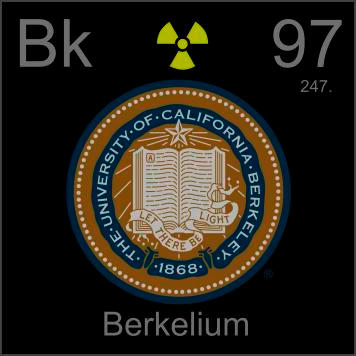

HOME
PREVIOUS
NEXT

Berkelium
Atomic Weight: 247[note]
Density: 14.78 g/cm3
Melting Point: 1050 °C[note]
Boiling Point: N/A
Berkelium is named after its place of discovery--the University of California at Berkeley. It has no applications, and, while an isotope with a half-life of 1380 years exists, no one seems to be making any.